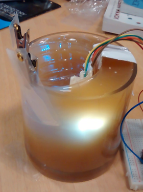
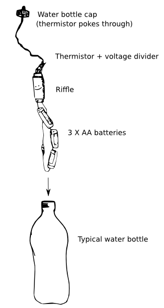
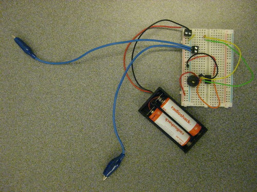
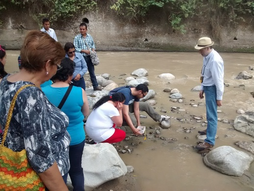

Don Blair
|
twitter
|
github
Skull Whispering
. The voice is in the head.

Turbidity
. R&D re: detecting suspended solids in water.

Riffle
. Open source water monitoring protype.

Coqui
. Conductivity probe, audio output.

Surata Visible
. Community water monitoring in northern Colombia.
Small Data
. Reflections on doing decentralized science.